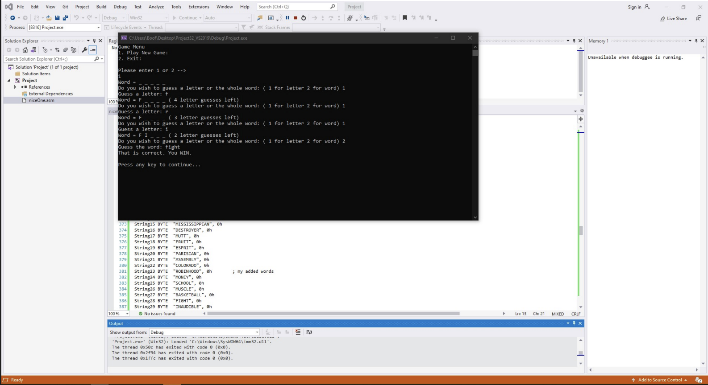

During my undergraduate studies, I took a challenging but transformative course that provided me with a deep understanding of computer architecture and low-level programming. Before ever touching Python, we learned to program at the hardware level using the IA-32 assembly language, which gave me a strong foundation for C programming and later high-level languages.
In this course, we worked directly with registers and memory, manually implementing loops, conditional statements, and variables. This experience taught me the fundamentals of how programs execute on the CPU, how data is represented, and how high-level language features are supported by hardware.
Final Project: Hangman Game in Assembly
The final project challenged us to develop a fully functional game of Hangman entirely in assembly language. This included
Randomly generating a word from a predefined list.
Implementing letter and word guessing logic with limited attempts.
Updating the display of correct and incorrect guesses in real-time.
Creating a menu-driven interface and handling user input safely.

This project required integrating everything we had learned—from using the Irvine32 library for input/output to manipulating memory directly with pointers.
Key learning outcomes from the project:
Writing structured, reusable assembly procedures.
Debugging low-level code and handling edge cases.
Translating high-level logic into CPU instructions.
Understanding CPU registers, memory addressing, and subroutine calls.
Other Assignments
The course also included several hands-on assignments that solidified our understanding of low-level programming:
Sieve of Eratosthenes: Created a procedure to generate all prime numbers between 2 and 3000, displaying them in a formatted output without hardcoding.
Matrix Letter Search: Generated a 6x6 matrix of random letters and identified valid sets containing exactly two vowels.
Caesar Cipher Encryption/Decryption: Built a menu-driven program to encrypt and decrypt phrases using a custom key, handling all input validation, uppercase conversion, and modular arithmetic entirely in assembly.
Random String Generator: Created unique random strings of variable length, practicing indexed addressing, procedure-based design, and proper use of local variables.
Reflection
This course was extremely rigorous, but it gave me a unique perspective on programming that most students do not receive. By learning assembly first, I developed a clear understanding of what happens “under the hood” when code runs, which later made learning Python, C, and other high-level languages much easier.
Here is my code for the final project. I wanted to include this here, so you can see how long and intricate these programs can become.
TITLE Final_Project.asm
;// Author: Kianoush Ranjbar
;//
;// Description: A "simple" game of Hangman
;//
;// This program presents a menu allowing the user to pick a menu option
;// which then performs a given task.
;// 1. Start Game
;// 2. Exit
;// ===================================================================================================================================================================
INCLUDE irvine32.inc
;//Macros
ClearEAX textequ
ClearEBX textequ
ClearECX textequ
ClearEDX textequ
ClearESI textequ
ClearEDI textequ
Newline textequ <0ah, 0dh>
.data
WordPrompt BYTE "Word = ", 0
LetterOrWord BYTE "Do you wish to guess a letter or the whole word: ( 1 for letter 2 for word) ",0
GuessLetterPrompt BYTE "Guess a letter: ",0
GuessWordPrompt BYTE "Guess the word: ",0
WinPrompt BYTE "That is correct. You WIN.",0dh, 0ah,0dh, 0ah, 0
RanOutLetters BYTE "You ran out of letter guesses. You LOSE.", 0dh, 0ah, 0
RanOutWords BYTE "You ran out of word guesses. You LOSE.",0dh, 0ah,0dh, 0ah, 0
LetterGuessesPrompt1 BYTE "( ",0
LetterGuessesPrompt2 BYTE " letter guesses left)",0
IncorrectWordPrompt1 BYTE "That is incorrect - ",0
IncorrectWordPrompt2 BYTE " word guesses remaining",0dh,0ah,0
RandomWord DWORD 0 ; will hold our random word
EmptyWord BYTE 60 DUP(?) ; will hold underscores and letters
GuessWord BYTE 30 DUP(?) ; hold space to enter a word for guessing
letters BYTE 5
words BYTE 3
guessIndicator BYTE 0
;-------------------------------------------------------------------------------------------------------
.code
main PROC
ClearEAX
ClearEBX
ClearECX
ClearEDX
ClearESI
ClearEDI
call Randomize ; initialize random
call RulesPrompt ; Display rules of the game
call WaitMsg ; press key when ready to start
call clrscr
Start:
call DisplayMenu ; display the menu for game
;----------- select option -----------------
call ReadDec ; get user option
cmp al, 1 ; check if user entered 1
je play ; if so jump to play the game
cmp al, 2 ; check if user entered 2
je quit ; if so, quit the program
cmp al, 2 ; if anything else was entered jump to error msg
ja oops
oops:
call crlf
call errorMsg
call crlf
jmp Start
;------------------------------------------------------
;------------------------------------------------------
;------------------------------------------------------
;-------------GAME STARTS HERE ------------------------
;------------------------------------------------------
;------------------------------------------------------
; 1st: Initailize things
;------------------------------------------------------
play:
call RandomWordGenerator ; method to randomly choose a word
mov [RandomWord], eax ; set up "randomword" variable, this will hold our random word
mov esi, [RandomWord] ; find string length
call MyStrLength ; return the length of string in eax
mov esi, OFFSET EmptyWord ; "empty word" will hold, space for underscores and future letters
call initializeVar ; initialize the variable emptyword to hold underscores the length of random word
mov BYTE PTR [letters], 5 ; initialize letter guesses
mov BYTE PTR [words], 3 ; initialize word guesses
mov BYTE PTR [guessIndicator], 0 ; clear letter guess indicator
;------------------------------------------------------
; 2nd: display the underscores for random word
;------------------------------------------------------
again:
mov edx, OFFSET WordPrompt ; display "Word = ""
call WriteString
mov edx, OFFSET EmptyWord ; display "empty word"
call WriteString
;------------------------------------------------------
; 3rd: print how many guesses you got left
;------------------------------------------------------
cmp BYTE PTR [guessIndicator], 0 ; if 1, guess is a letter, if 0 guess is not a letter, or we have not started guessing
je inputSection ; if not, ask for input
cmp BYTE PTR [letters], 0 ; check if we are out of letter guesses
je lost ; if we have 0 letter guesses, that means you lose, so jump to lost
;Display how many letter guesses left
mov edx, OFFSET LetterGuessesPrompt1 ; display "("
call WriteString
movzx eax, BYTE PTR [letters] ; put how many letter guesses left in eax to display it
call WriteDec ; display number
mov edx, OFFSET LetterGuessesPrompt2 ; display " letter guesses left)"
call WriteString
;------------------------------------------------------
; 4th: get input then see if it is - letter or word?
;------------------------------------------------------
inputSection:
call CrLf
tryAgain:
mov edx, OFFSET LetterOrWord ; display "Do you wish to guess a letter or the whole word: ( 1 for letter 2 for word )"
call WriteString
call ReadDec ; get input from user
cmp eax, 1 ; check if user entered 1
je PickLetter ; if so, jump to letter
cmp eax, 2 ; check if user entered 2
je PickWord ; if so, jump to word
call errorMsg ; display error if something either than 1 or 2 was entered
jmp tryAgain ; try again
;------------------------------------------------------
; letter
;------------------------------------------------------
PickLetter:
cmp BYTE PTR [letters], 0 ; check to see if we are out of letter guesses
jg getLetter ; if we have some left, proceed
getLetter: ; if we get to here it means we have letter guesses left
mov edx, OFFSET GuessLetterPrompt ; display "guess a letter: "
call WriteString
call ReadChar ; get letter from user
call WriteChar ; display same letter
call Crlf
call uppercase ; convert user entered letter to uppercase
mov esi, OFFSET EmptyWord ; load pointer to empty word
mov edi, [RandomWord] ; load pointer to random word
call findLetter ; updates the "emptyword = _ _ _ _' with letters from random word, and returns how many times your guess was in the random word in eax
cmp eax, 0 ; if your guessed letter was in the random word, you will proceed
je UpdateGuess ; if not, update how many guesses left
; if there was a match, check to see if win
mov esi, OFFSET EmptyWord ; pointer to empty word
call checkifWin ; check to see if we completed the word, will return 1 in eax if we win, and 0 if lose
cmp eax, 1 ; if we won, proceeed
jne UpdateGuess ; if not, update how many guesses left
; print last word message
mov edx, OFFSET WordPrompt ; display "Word = "
call WriteString
mov edx, OFFSET EmptyWord ; display empty word, which should be filled with the random word now, instead of underscores, because you guessed it correctly
call WriteString
call CrLf
jmp win ; jump to win
UpdateGuess:
mov BYTE PTR [guessIndicator], 1 ; this indicates a letter guesss
dec BYTE PTR [letters] ; decrement number of letter guesses
jmp again ; guess again
;------------------------------------------------------
; word
;------------------------------------------------------
PickWord:
mov edx, OFFSET GuessWordPrompt ; Display "Guess the word: "
call WriteString
mov edx, OFFSET GuessWord ; Holds space to enter a word
mov ecx, 30 ; maximum length of word is 30
call ReadString ; get string input from user
mov esi, OFFSET GuessWord ; pass the string to use for next procedure
call stringupper ; convert string to uppercase
mov esi, OFFSET GuessWord ; update string
mov edi, [RandomWord] ; pass the random string
call compareStrings ; procedure to compare "esi = user entered string" with edi "random string" // eax will return 1 if strings are equal and 0 if not
cmp eax, 1 ; check if strings are equal
je win ; if equal, jump to win
mov BYTE PTR [guessIndicator],0 ; else, indicate not a letter guess
dec BYTE PTR [words] ; and decrement number of word guesses
cmp BYTE PTR [words], 0 ; check if we are out of word guesses
jg IncorrectWord ; if we have guesses left, jump to incorrect word
; else, that means we lost, so diplay msg
mov edx, OFFSET RanOutWords ; display "You ran out of word guesses. You LOSE"
call WriteString
call waitmsg
call clrscr
jmp Start ; restart game
IncorrectWord: ; incorrect word entered
mov edx, OFFSET IncorrectWordPrompt1 ; display "That is incorrect - "
call WriteString
movzx eax, BYTE PTR [words] ; display number of word guesses left
call WriteDec ; write number
mov edx, OFFSET IncorrectWordPrompt2 ; display " word guesses remaining"
call WriteString
jmp again ; guess again
;------------------------------------------------------
; if you won
;------------------------------------------------------
win:
mov edx, OFFSET WinPrompt ; display "That is correct. You win"
call WriteString
call waitmsg
call clrscr
jmp Start
quit:
jmp done
;------------------------------------------------------
; if you lost
;------------------------------------------------------
lost:
call crlf
call crlf
mov edx, OFFSET RanOutLetters ; display "You ran out of letter guesses. You LOSE"
call WriteString
call waitmsg
call clrscr
jmp Start ; restart game
done:
exit ; exit the program
ret
main ENDP
;------------------------------------------------------------------------------------------------
;------------------------------------------------------------------------------------------------
RulesPrompt Proc
.data
Rules byte 'Rules of the game: ', 0Ah, 0Dh, 0
Rules1 byte 'A random word will be generated, and you will only see the length of this word.',0Ah, 0Dh, 0
Rules3 byte 'Guess the word, or a letter in this word. ',0Ah, 0Dh, 0
Rules4 byte 'Guess the word correctly and you WIN, or guess all the letters in the word and WIN. ',0Ah, 0Dh, 0
Rules5 byte 'You have 3 chances to guess the word directly, or 5 chances to guess all the letters in the word. ',0Ah, 0Dh, 0
Rules6 byte 'If you run out of your 3 word guesses, you LOSE, and if you run out of you 5 letter guesses, you LOSE. ',0Ah, 0Dh, 0Ah, 0
.code
mov edx, offset Rules
call WriteString
mov edx, offset Rules1
call WriteString
mov edx, offset Rules3
call WriteString
mov edx, offset Rules4
call WriteString
mov edx, offset Rules5
call WriteString
mov edx, offset Rules6
call WriteString
ret
RulesPrompt ENDP
;------------------------------------------------------------------------------------------------
;------------------------------------------------------------------------------------------------
DisplayMenu Proc
.data
MainMenu byte 'Game Menu ', 0Ah, 0Dh,
'1. Play New Game: ',0Ah, 0Dh,
'2. Exit: ',0Ah, 0Dh, 0Ah, 0Dh,
'Please enter 1 or 2 --> ',newline, 0h
.code
mov edx, offset MainMenu
call WriteString
ret
DisplayMenu ENDP
;------------------------------------------------------------------------------------------------
;------------------------------------------------------------------------------------------------
RandomWordGenerator PROC
;// Description: generates a random word from list of random words
;// Returns: random string
.data
String0 BYTE "SUPERMAN", 0h
String1 BYTE "PYTHON", 0h
String2 BYTE "ANXIETY", 0h
String3 BYTE "CANOE", 0h
String4 BYTE "DOBERMAN", 0h
String5 BYTE "FRAME", 0h
String6 BYTE "FROST", 0h
String7 BYTE "ORANGE", 0h
String8 BYTE "FRIGATE", 0h
String9 BYTE "BEAUCERON", 0h
String10 BYTE "POSTAL", 0h
String11 BYTE "SHEET", 0h
String12 BYTE "CABINET", 0h
String13 BYTE "FLEET", 0h
String14 BYTE "HANGMAN", 0h
String15 BYTE "MISSISSIPPIAN", 0h
String16 BYTE "DESTROYER", 0h
String17 BYTE "MUTT", 0h
String18 BYTE "FRUIT", 0h
String19 BYTE "ESPRIT", 0h
String20 BYTE "PARISIAN", 0h
String21 BYTE "ASSEMBLY", 0h
String22 BYTE "COLORADO", 0h
String23 BYTE "ROBINHOOD", 0h ; my added words
String24 BYTE "MONEY", 0h
String25 BYTE "SCHOOL", 0h
String26 BYTE "MUSCLE", 0h
String27 BYTE "BASKETBALL", 0h
String28 BYTE "FIGHT", 0h
String29 BYTE "INAUDIBLE", 0h
StringList DWORD String0, String1, String2, String3, String4
DWORD String5, String6, String7, String8, String9
DWORD String10, String11, String12, String13, String14
DWORD String15, String16, String17, String18, String19
DWORD String20, String21, String22, String23, String24
DWORD String25, String26, String27, String28, String29
.code
mov esi, OFFSET StringList ; point to list of strings
mov eax, 30 ; number of words in list
push ebx
mov ebx, eax ; save number in ebx
call Random32 ; get a random number
mov edx, 0 ; clear register
div ebx ; divide random number by number of words in list
shl edx, 2 ; multiply remainder by 4 becuase we are using DWORD
add esi, edx ; point to the string
mov eax, [esi] ; save string to return it
pop ebx
ret
RandomWordGenerator ENDP
;------------------------------------------------------------------------------------------------
;------------------------------------------------------------------------------------------------
initializeVar PROC
;// Description: initalizes empty word with underscores
;// Requires: eax which has the length of the random word AND esi has empty word variable space
;// Returns: empty word initialized
mov ecx, eax ; use length the length as the loop counter
Loop23:
mov BYTE PTR [esi], '_' ; put an underscore
inc esi ; increment index in string
mov BYTE PTR [esi], ' ' ; put a space inbetween
inc esi ; increment index in string
loop Loop23
; the loop will end after the length is filled
mov BYTE PTR [esi], 0 ; put null terminating byte
ret
initializeVar ENDP
;------------------------------------------------------------------------------------------------
;------------------------------------------------------------------------------------------------
MyStrLength PROC
;// Description: calculates the length of string
;// Requires: esi pointing to the string
;// Returns: returns the length in eax
mov eax, 0 ; initialize length to zero
loop44:
cmp BYTE PTR [esi], 0 ; see if char is zero
je EndTheLoop ; if zero we reached the end of the string, so end loop
inc esi ; else, increment to next char
inc eax ; increment length as well
jmp loop44 ; repeat loop
EndTheLoop:
ret
MyStrLength ENDP
;------------------------------------------------------------------------------------------------
;------------------------------------------------------------------------------------------------
compareStrings PROC
;// Description: compares 2 strings
;// Requires: esi has word we are guessing and edi has the random word
;// Returns: 1 if strings are equal and 0 if not
CompareLoop:
mov al, [esi] ; put first char of string we are guessing in al
cmp al, [edi] ; compare with same char in random word
jne over ; if chars are not equal, jump to done
inc esi ; else, go to next index in guessed word
inc edi ; inc to next index of random word as well
cmp al, 0 ; check if 0, means we reached end of string
jne CompareLoop ; if not 0, repeat loop
mov eax, 1 ; if it is the end of the string, return a 1
ret
over:
mov eax,0 ; return zero to indicate not equal
ret
compareStrings ENDP
;------------------------------------------------------------------------------------------------
;------------------------------------------------------------------------------------------------
findLetter PROC
;// Description: will update emptyword variable, with the correct letter in the right spot
;// Receives : EmptyWord, in esi AND random word in edi AND guessed char in al
;// Returns : number of times the char was in the string in eax
push ebx
mov cl, al ; mov input char to cl for search
mov ebx, 0 ; initialize character count
LoopAgain:
mov dl, [esi] ; load char from emptyword
cmp dl, 0 ; check if it is 0
je Done1 ; if so, we reached the end of the string and are done
cmp dl, '_' ; else, check if "_"char is available
jne skip ; if its not "_", jump to skip {next one}
cmp cl, [edi] ; compare user input with char in random word
jne skip ; if the char's are not equal, jump to skip {next one}
inc ebx ; else, number of times char is in random word
mov [esi], cl ; replace that char in emptyword
skip:
add esi, 2 ; increment to next letter in emptyword
inc edi ; increment to next letter in random word
jmp LoopAgain
Done1:
mov eax, ebx ; return number of times char is in random word
pop ebx
ret
findLetter ENDP
;------------------------------------------------------------------------------------------------
;------------------------------------------------------------------------------------------------
checkifWin PROC
;// Description: check to see if you have won the game, by comparing each letter of the word
;// Receives : Nothing
;// Returns : eax will equal 1 if you won, and 0 if not
Loop66:
mov cl, [esi] ; starting with the fist letter
cmp cl, 0 ; check if letter = 0
je Won ; if letter = 0, that means we reached end of string, and that means we won
cmp cl, '_' ; else, check if "_" character is still around
je DidnotWin ; if so, that means we haven't won yet
add esi, 2 ; else, increment to next char
jmp Loop66
DidnotWin:
mov eax, 0 ; return 0
ret
Won:
mov eax, 1 ; return 1
ret
checkifWin ENDP
;------------------------------------------------------------------------------------------------
;------------------------------------------------------------------------------------------------
uppercase PROC
;// Description: converts char from lower case to uppercase, I stole this proc from chapter 8 Uppercase.asm
;// Requires: char in al
;// Returns: uppercase letter in al
cmp al,'a' ; less than 'a'?
jb L1 ; yes: do nothing
cmp al,'z' ; greater than 'z'?
ja L1 ; yes: do nothing
sub al,32 ; no: convert it
L1:
ret
uppercase ENDP
;------------------------------------------------------------------------------------------------
;------------------------------------------------------------------------------------------------
stringupper PROC
;// Description: converts string from lower case to uppercase, by calling uppercase proc for each letter
L2:
mov al, [esi] ; starting with first char from string
cmp al, 0 ; check if char is 0
je endthis ; if char is 0 that means it is null byte, so we reached the end of the string
call uppercase ; else call uppercase proc
mov [esi], al ; update the char
inc esi ; then move to the next char
jmp L2 ; repeat loop
endthis:
ret
stringupper ENDP
;------------------------------------------------------------------------------------------------
;------------------------------------------------------------------------------------------------
errorMsg PROC
;// Description: Displays Error Message on invalid entry
;// Receives : Nothing
;// Returns : Nothing
.data
errormessage byte 'You have entered an invalid option. Please try again.', Newline, 0h
.code
push edx ;// Save value in edx
mov edx, offset errormessage
call writestring
;call waitmsg
pop edx ;// restore value in edx
ret
errorMsg ENDP
;// -------------------------------------------------------------
END main